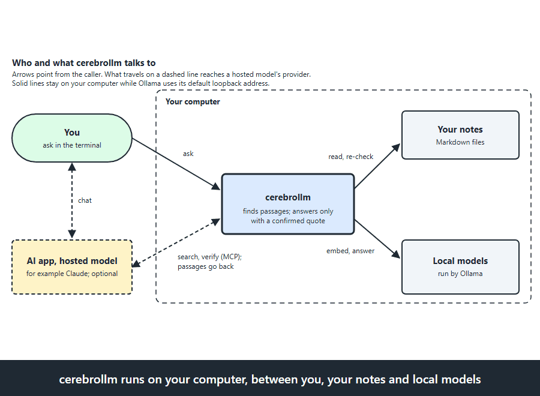
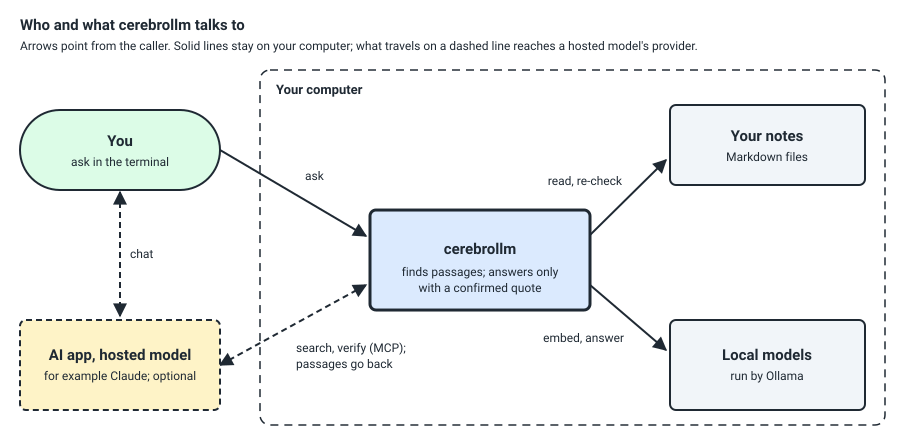
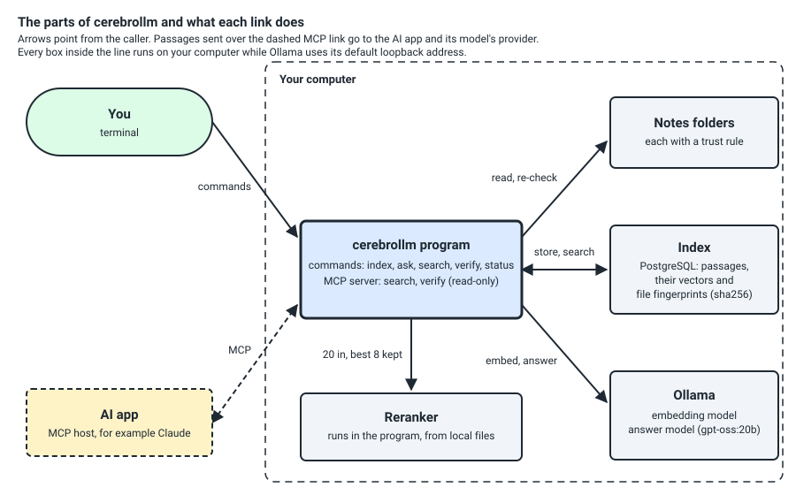
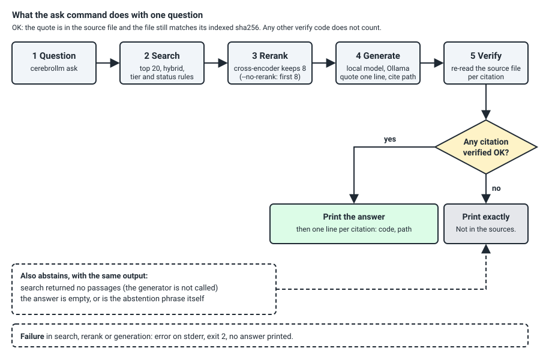

cerebrollm searches your Markdown documents on your own machine, asks a local model to quote the line it relies on, then opens the cited file and checks the quote is there. If the check fails, you get no answer.
Quick start See the evidence pip install cerebrollm
$ cerebrollm ask "Which environment variable changes where Ollama stores downloaded models on Windows?" "set the environment variable `OLLAMA_MODELS` in your user account." [ollama/docs/windows.md] OK ollama/docs/windows.md
$ cerebrollm ask "What is the default keep_alive value for the Ollama /api/generate request?" Not in the sources. # the model's quote was not word for word in api.md # (verify: MISSING), so the answer was withheld
Two recorded runs with gpt-oss:20b, shown as ask prints them. The second file does hold the answer: the gate withheld it because the quote did not match. Records: smoke2-answerable.json, smoke3-1.json.
Status: 0.1.3, early research. The aim is at least 90% right outcomes with under 2% confidently wrong runs. No local model meets it yet. The numbers that say so are below.
One machine (Windows 11, WSL2 Ubuntu 24.04, RTX 4070 SUPER with 12 GB). The corpus is public documentation. Each link opens the committed file.
| Question | Result | Evidence | State |
|---|---|---|---|
Does retrieval help a small local model? phi4, 60 questions, majority of 5 runs | 1/60 without retrieval, 47/60 with it | eval/RESULTS.md | measured |
How often is gpt-oss:20b confidently wrong? 35 questions on recent releases | 122 of 175 runs with no retrieval, 17 of 175 with plain search, 7 of 104 with ask | eval/RESULTS-v2.md | measured |
| Does the top 8 hold a line that answers the question? 60 questions, 1,432 documents, 13,627 chunks | 45/60 with default search, 46/60 with the reranker | eval/runs/retrieval/R-summary.md | measured |
How often does a citation verify? Answers with at least one OK citation | Claude Haiku 347 of 350, phi4 184 of 350 | eval/RESULTS.md | measured |
| Does the model grader agree with a person? | 39 of 40 answers in run 1, 40 of 40 in run 2 | eval/RESULTS.md | measured on 40 answers |
| Which embedding model? 150 questions | qwen3-embedding:0.6b: hybrid hit@5 0.927, against 0.907 and 0.893 | research/model-study/RESULTS.md | measured |
| How long does indexing take? 13,431 chunks from 1,412 documents | 9.7 minutes of embedding on the 12 GB card | research/model-study/RESULTS.md | measured, one machine |
| Which addresses does the Python code connect to? | Listed in one capture; libpq is not seen | eval/runs/network/capture-2026-11-08.txt | measured |
Does ask meet the aim of 90% right outcomes with under 2% confidently wrong runs? | No local model meets it | eval/RESULTS-v2.md | measured |
35 public items: 20 answerable questions on release notes dated after 2026-06 and 15 unanswerable ones. A run is confidently wrong when it answers an answerable item wrongly, or gives any answer to an unanswerable one. Plain search is the top 8 passages with a citation instruction.
| Model | Plain search: right of 35 | Confidently wrong runs | ask: right of 35 | Confidently wrong runs |
|---|---|---|---|---|
| Claude Sonnet 5.5 (hosted) | 34 (97.1%) | 0 of 105 | not run | not run |
gemma4:12b | 33 (94.3%) | 4 of 175 (2.3%) | 22 (62.9%) | 0 of 105 |
gpt-oss:20b | 32 (91.4%) | 17 of 175 (9.7%) | 28 (80.0%) | 7 of 104 (6.7%) |
phi4 | 31 (88.6%) | 10 of 175 (5.7%) | 21 (60.0%) | 0 of 105 |
ask removes most confidently wrong runs and gives up right outcomes in exchange: it abstains on 16 to 42 runs of answerable questions. With 35 items, zero confidently wrong items bounds the rate only below 8.6% (rule of three), so this set cannot show a rate under 2%. Grader: gpt-oss:20b; a second grader, gemma4:12b, agreed on 432 of 454 answers. Fifty raw records that quote private documents are withheld. Full tables: docs/RESULTS.md.
Each row is a limit of 0.1.3. A row moves to the table above only when its check has run and its output is committed.
| Topic | What is true today | State |
|---|---|---|
| Corpus size | The largest measured index holds 13,627 chunks from 1,432 documents. Search scans every vector exactly, with no approximate index. Behaviour above about 15,000 chunks is unknown. | not measured |
| File types | Only Markdown files are indexed. PDF, Word and HTML are not read. | not built |
| Platforms | Tested on Ubuntu 24.04, native or under WSL2. macOS and native Windows are untested. | not measured |
| Hardware | All speeds come from one 12 GB GPU. Other cards and CPU-only runs are not measured. | not measured |
| Relevance of the quote | The gate checks that the quote exists in the file. It does not check that the quote answers the question. | proposed for 0.2 |
| Text around the quote | One verified citation lets the whole answer through. The rest of the model's text is printed unchecked. | proposed for 0.2 |
| A confidently wrong rate under 2% | The 35-item set is too small to show it. A larger public set is proposed. | proposed for 0.2 |
| Fresh-machine install | The quick-start commands are the ones the author ran. The first index and ask on a new machine were not re-run for this release. | not checked |
| HTTP API | There is a command line and an MCP server. There is no web API. | proposed, later |
One program between you, your notes and local models. A PostgreSQL index, Ollama for embeddings and answers, and a reranker loaded from local files.
OK: the answer is printed. Any other case: exactly Not in the sources.

allow_remote = true. It leaves out the AI app's own traffic to its provider.
engine/cerebrollm/. It leaves out the configuration file and the secret scan that runs while indexing.
cerebrollm ask and its output gate, checked against engine/cerebrollm/answer.py. It leaves out indexing and the MCP server.cerebrollm is a fixed pipeline. It does not plan or loop on its own. An agent can call it: cerebrollm mcp is a read-only MCP server (MCP is the standard way AI apps call outside tools) with two tools, search and verify. Passages come back wrapped in <<<BEGIN RETRIEVED DATA>>> markers so the host can treat them as data.
claude mcp add --scope user cerebrollm -- \ ~/.cerebrollm/venv/bin/cerebrollm --config ~/cerebrollm.toml mcp
A host that sends tool results to a cloud model sends your passages to that provider. What leaves the machine is listed in docs/DATA.md.
Ubuntu 24.04, native or under WSL2. You need Python 3.12, Ollama running at 127.0.0.1:11434, and about 17 GB of disk.
git clone https://github.com/sourav-patra/cerebrollm && cd cerebrollm
/usr/lib/postgresql/16/bin/postgres --version prints 16.x. sudo bash engine/setup/root-ubuntu.sh
USER SETUP DONE. bash engine/setup/user.sh
ollama list shows both. ollama pull qwen3-embedding:0.6b ollama pull gpt-oss:20b
engine/bin/cerebrollm index engine/bin/cerebrollm ask "a question your notes answer"
pip install cerebrollm gives the same commands without the clone; steps 2, 3 and 4 still apply.
Every proposed item in the release map has one acceptance check. Support pays for the hardware time and the work to run a check. The output is committed whether the result is good or bad.
Index and query corpora of rising size on rented hardware, and publish recall and latency at each step. Today the measured ceiling is 13,627 chunks.
Enough graded items to bound a 2% confidently wrong rate. The 35-item set bounds it only below 8.6%.
Run the quick start and the test suite on each platform and record the logs. Both are untested today.
To fund one of these, or to offer hardware time, open an issue and name the check.